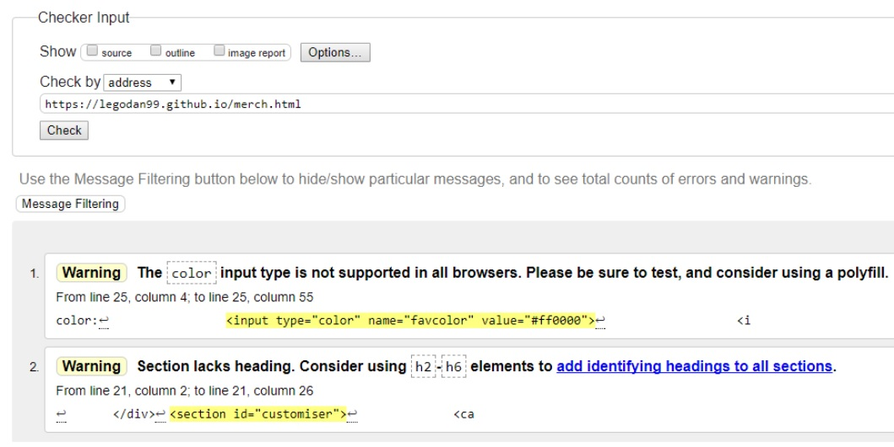
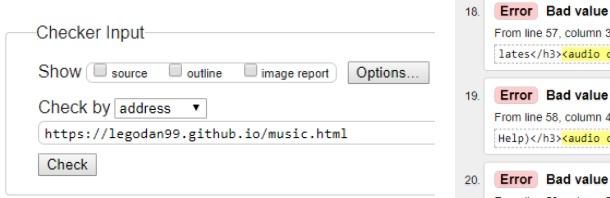

DEATH GRIPS

Website URL: legodan99.github.io
In web development, HTML5 and CSS3 is used to format and style webpages. However, these have only been in place since September 2014 and June 2012 respectively. Before these markup languages were introduced HTML and CSS were a lot simpler, but could do a lot less. They are also outdated and can be fairly vague. This section of the report will be about how current web standards compare to the older ones, and why HTML5 is a massive improvement over HTML4.
First of all, HTML4 was recommended by W3C in 1997, so it is massively outdated at this time, over 20 years later. HTML5 adds several new elements including 'header', 'section', 'article' and 'canvas', making web authoring easier than ever before and allowing more to be done. The canvas element in particular, implementing the drawing of shapes, lines and images onto the page, was a master stroke allowing people to make full-fledged games and other interactive elements never before conceived. I myself have used several of these elements in my website, and can personally say it made the process a lot easier.
HTML5 is also a lot better at handling malformed documents, and corrects invalid code into something that runs without generating too many errors. Even the official death grips website has a couple of errors when you enter the console, but it runs so well you wouldn't even know without checking. It is estimated that 90% of pages on the internet are at least slightly malformed, according to Joel Spolsky of Stack Exchange, and the fact that they still work for the most part is a testament to HTML5's handling capabilities.
However, HTML5 has removed many HTML4 elements that it sees as obsolete or difficult to run on mobile devices, forcing older sites to update or lose functionality. Also, a lot of what makes HTML function as a markup language was already achieved by HTML4.
Overall, I would consider HTML5 a big improvement with features I used frequently in the development of my website.
The W3C suggests a series of best practices for use during web / mobile development. Page content is an important example, referring to how too much data will affect users with low bandwidth and will cost them more, or for people that are covered it will run slower. I have achieved this for the most part by linking videos to YouTube in a way that requires them to press a button to play it, meaning it will only load if the user wants it to. However, it is harder to link music as there are few legal options for audio sharing, so the best I could do was download the 2 free albums the artist put out, storing them in the Assets folder and linking those as sources. In future projects I could try searching for an alternative such as SoundCloud which death grips used themselves on their website. Otherwise though the amount of data needed to use my site is fairly small.
Overall behavior is also important, as it dictates the user's experience. If someone is using a different browser that breaks the site, they will miss out on a lot of content other people are getting. Because of this I've done my best to allow users of Internet Explorer, Safari and Chrome to use my site. Barely any of my site uses elements exclusive to one browser, and looks pretty much identical on the browsers I've tested. Therefore, thematic consistency is upheld. I have also tested the site to make sure it all functions as expected, and run it through the W3C validation tool on each page (this is seen in the testing section later in the report).
Finally, navigation and links are another best practice I have used in my site. Firstly, the URL should be easy to remember and type. Sites like https://legodan99.github.io/index.html would be difficult to type and hard to remember, though it would lead to the same site as legodan99.github.io, which is much simpler. I have linked my videos externally to YouTube to free up space in my Root folder, but kept the songs and images sourced from my own Assets folder to reduce access requests and reduce load time.
I used the validator on the official W3C website (validator.w3.org) to point out any flaws in my website. The results are displayed in screenshots below.
As you can see, the pages for the index, videos, demo and log threw up no errors.
However, the merch page had a couple of warnings. The section didn't have a heading as it didn't really need one, and the color input worked in all the browsers I tried the site out on.
Alas, not all pages worked as smoothly. All in all the music page threw up 37 errors. Most of these were about my audio file names having spaces, but ultimately that page still worked and it would have been a waste of time to go back and manually add about 100 underscores (death grips song titles are long sometimes) to the album and the html. This rules out all 20 bad value errors. This still leaves 17 errors, which are split into the following.
For this issue, I removed the 'align' attribute and replaced it with 'margin: auto' and 'text-align: center' in CSS.
In this case, I made one album with an id tag and then copied the format for the second album, forgetting about how multiple elements shouldn't have the same id. I simply replaced id's with classes in the html and CSS.
And finally this was a result of following old guides on adding audio. I simply removed the 'type' attribute, as it did nothing anyway. After this, there should only be 20 bad value errors (for the song titles) that I'm happy to overlook.
Therefore, all my pages are acceptable according to W3C validation.